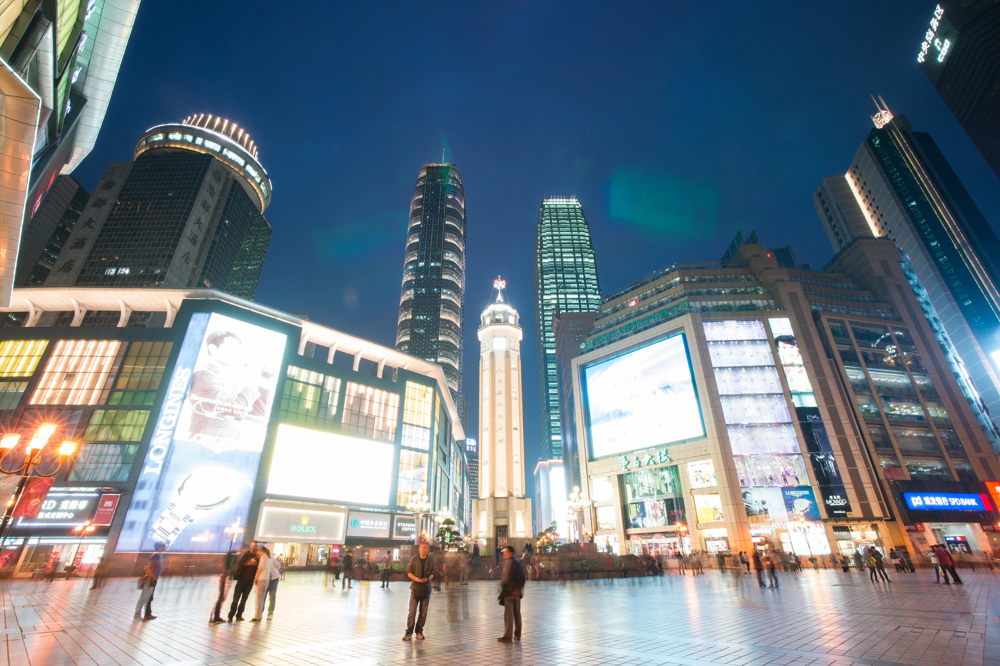

重庆解放碑
Chongqing Liberation Stele

抗战胜利纪功碑暨人民解放纪念碑，又名“抗战胜利纪功碑”、“人民解放纪念碑”， 简称“解放碑”。 位于重庆市渝中区解放碑商业步行街中心地带，是抗战胜利的精神象征，是中国唯一一座纪念中华民族抗日战争胜利的纪念碑。 抗战胜利纪功碑暨人民解放纪念碑于1946年10月31日动工，1947年8月落成。1950年10月1日，时任西南军政委员会主席刘伯承为“人民解放纪念碑”题写碑名。该碑正面向北偏东，为八面柱体盔顶钢筋混凝土结构，碑通高27.5米，边长2.55米，碑内连地下共八层，设有旋梯达于碑顶，碑顶向街口的四面装有自鸣钟，碑台周围为花圃，总占地面积62平方米，保护范围面积642平方米。该处是中国人民反法西斯战争取得胜利的象征，也是重庆解放及重庆市的象征。 2000年9月，由重庆市人民政府公布为直辖后第一批市级文物保护单位；2013年5月，被国务院列入“第七批全国重点文物保护单位”； 2016年9月，入选“首批中国20世纪建筑遗产”名录。